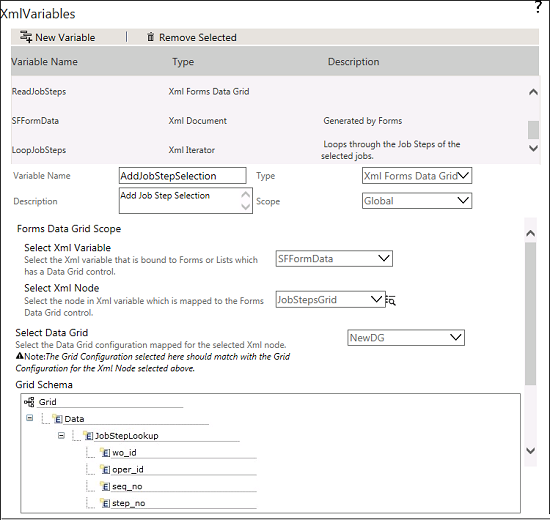
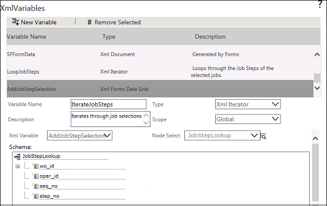
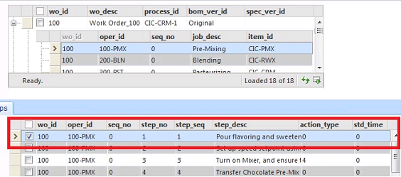
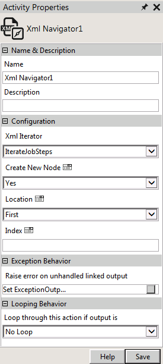
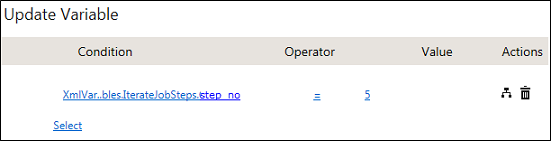
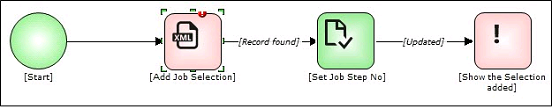
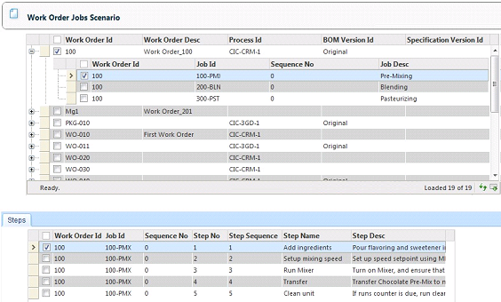
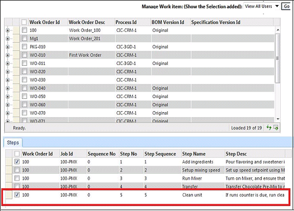

The form instance XML generated for the form with a Job Step selected will be as given below. [However, note that the XML generated will be in the encoded format in the Form instance XML].

<Grid>
<Data>
<JobStepsLookup>
<wo_id><![CDATA[100]]></wo_id>
<oper_id><![CDATA[100-PMX]]></oper_id>
<seq_no><![CDATA[0]]></seq_no>
<step_no><![CDATA[1]]></step_no>
<step_seq><![CDATA[1]]></step_seq>
<step_name><![CDATA[Add ingredients]]></step_name>
</JobStepsLookup>
</Data>
</Grid>
To add another row selection using workflows, another XML node has to be created for the JobStepsLookup node (which is the repeating node). If another node is added, the XML will be generated as shown below:
<Grid>
<Data>
<JobStepsLookup>
<wo_id><![CDATA[100]]></wo_id>
<oper_id><![CDATA[100-PMX]]></oper_id>
<seq_no><![CDATA[0]]></seq_no>
<step_no><![CDATA[1]]></step_no>
<step_seq><![CDATA[1]]></step_seq>
<step_name><![CDATA[Add ingredients]]></step_name>
</JobStepsLookup>
<JobStepsLookup>
<wo_id><![CDATA[100]]></wo_id>
<oper_id><![CDATA[100-PMX]]></oper_id>
<seq_no><![CDATA[0]]></seq_no>
<step_no><![CDATA[3]]></step_no>
<step_seq><![CDATA[3]]></step_seq>
<step_name><![CDATA[Run Mixer]]></step_name>
</JobStepsLookup>
</Data>
</Grid>

To achieve this, XML Navigator activity is being used in this scenario.

Note: To add selections at multiple hierarchy levels, an Iterator variable has to be created at the parent levels with their corresponding repeating nodes.

Here the Value column for the Jobs Step Grid Configuration is: step_no.
Note: This update does not update or modify any data to the data source lookup configured for the Data Grid Control.



Note: To modify an existing selection, go to the specific node and update the Value field of the lookup data source. If a definite node is not specified for updating the selection, then by default the first selection is modified and updated.